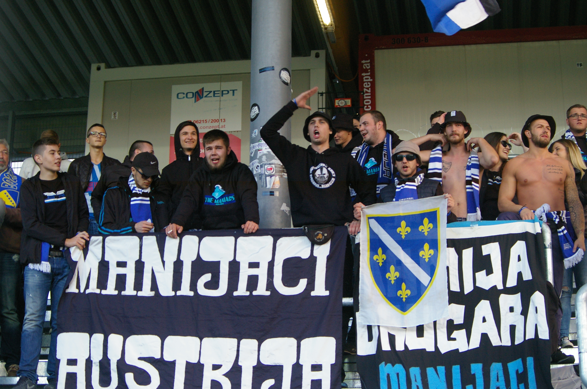
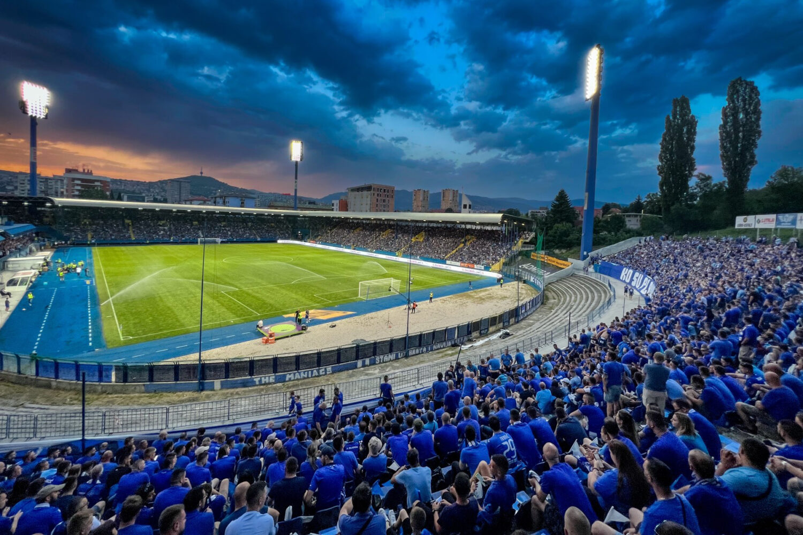

Dobrodošli na stranicu FK Željezničar
FK Željezničar je jedan od najpoznatijih i najtrofejnijih nogometnih klubova u Bosni i Hercegovini. Klub je osnovan 1921. godine u Sarajevu, a svoj naziv nosi prema Željezničarskoj radničkoj tradiciji, jer je u početku bio povezan sa zaposlenicima željezničkog sektora. Iako je kroz svoju dugu istoriju imao različite uspone i padove, Željezničar se smatra jednim od "velikih" klubova na bosansko-hercegovačkoj sportskoj sceni.
Galerija

